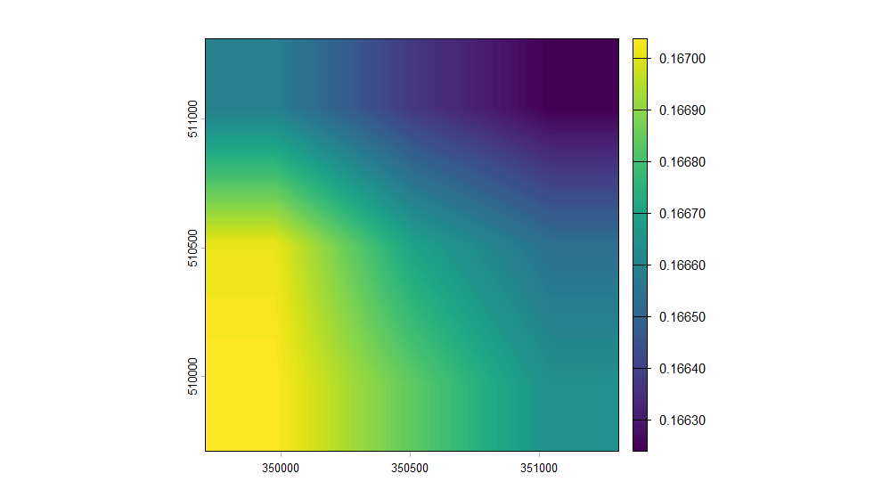
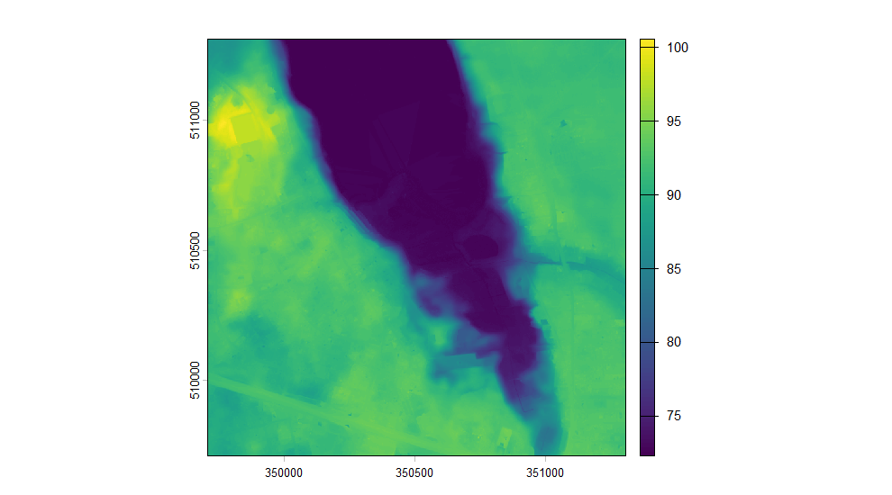

Poland changed the system its heights are measured in, and the archive holds both. Two elevation models of the same ground can differ by about 17 cm for no reason but the datum, and nothing in either file says so.
library(rgeopl)
library(terra)
#> terra 1.9.34
aoi <- as_aoi(c(16.80, 52.44), buffer = 800)
dem <- dem_request(aoi, format = "grid", quiet = TRUE)
unique(sf::st_drop_geometry(dem)[dem$product == "DTM", c("year", "VRS")])
#> <rgeopl index index: 8 tiles>
#> vintages: 2012, 2019, 2020, 2021, 2022, 2023, 2024, 2025
#> note: mixed vertical datums (PL-EVRF2007-NH, PL-KRON86-NH)
#> year VRS
#> 1 2022 PL-EVRF2007-NH
#> 8 2021 PL-EVRF2007-NH
#> 32 2020 PL-EVRF2007-NH
#> 46 2019 PL-EVRF2007-NH
#> 97 2012 PL-KRON86-NH
#> 118 2023 PL-EVRF2007-NH
#> 121 2024 PL-EVRF2007-NH
#> 123 2025 PL-EVRF2007-NHThe index says which system each tile is in, in its VRS
column, and the change is visible in it: everything up to 2019 is
PL-KRON86-NH, everything after is
PL-EVRF2007-NH.
What the difference is
Measured across the country, an EVRF2007 height is 13.6 to 19.2 cm above the KRON86 height of the same ground, and by how much depends on where you are.
terrain <- tile_mosaic(
subset(dem, product == "DTM" & year == 2012),
aoi, crop = "aoi", quiet = TRUE
)
converted <- dem_to_datum(terrain, from = "kron86", to = "evrf2007",
quiet = TRUE)
plot(converted - terrain, main = "")
plot of chunk shift
That is the whole correction, and it is smooth: it is the difference between two quasi-geoid models, so it changes by centimetres across the country and by almost nothing across a stand.
Why st_transform() is not the answer
PROJ knows the right transformation and lists it at 0.04 m accuracy, but cannot obtain the grid it needs. Asked to convert anyway it offers a second candidate and takes it:
p <- sf::sf_proj_pipelines("EPSG:2180+9650", "EPSG:2180+9651")
p[, c("accuracy", "instantiable")]
#> Candidate coordinate operations found: 2
#> Strict containment:
#> Axis order auth compl:
#> Source:
#> Target:
#> Best instantiable operation has only ballpark accuracy
#> Description:
#> Definition:The one it can instantiate is +proj=noop. It does
nothing: the heights come back unchanged and relabelled, which is worse
than an error, because nothing about the result looks wrong.
dem_to_datum() goes up to the ellipsoid through one
quasi-geoid model and back down through the other instead, and refuses
rather than guessing if the grids cannot be reached, if the area lies
outside them, or if the computed shift is exactly zero everywhere.
When it matters, and when it does not
A canopy model does not need any of this. Surface and terrain are measured in the same system and it cancels in the subtraction — as long as both halves come from the same survey.
That last clause is the trap. The terrain is remapped far more often than the surface, so the newest of each is often two different flights:
bialowieza <- as_aoi(c(23.85, 52.70), buffer = 1500)
bdem <- dem_request(bialowieza, format = "grid", quiet = TRUE)
unique(sf::st_drop_geometry(bdem)[bdem$product %in% c("DSM", "DTM"),
c("product", "year", "VRS")])
#> <rgeopl index index: 6 tiles>
#> vintages: 2018, 2022, 2024, 2025
#> products: DTM, DSM
#> note: mixed vertical datums (PL-EVRF2007-NH, PL-KRON86-NH)
#> product year VRS
#> 1 DTM 2022 PL-EVRF2007-NH
#> 6 DTM 2018 PL-KRON86-NH
#> 7 DSM 2018 PL-KRON86-NH
#> 22 DTM 2024 PL-EVRF2007-NH
#> 49 DSM 2025 PL-EVRF2007-NH
#> 50 DTM 2025 PL-EVRF2007-NHTake the newest surface and the newest terrain here and they straddle the change of datum. Subtract them as they come and every canopy is about 16 cm too short, uniformly, on top of the real growth between the flights.
chm_years() avoids the question by only offering
vintages that hold both:
chm_years(bialowieza, quiet = TRUE)
#> year resolution surface terrain
#> 2 2025 1 1 1
#> 1 2018 1 5 5When you are assembling the two halves yourself,
chm_build() takes their systems and converts before
subtracting:
Rasters carry no vertical system, so this cannot be worked out from them. The index knows; you have to pass it on.
Joining terrain across the boundary
tile_mosaic() refuses a selection that mixes vertical
datums, because the seam would be a step in the ground that is not
there. It is the one refusal with a way through: name the system you
want to land in and it converts one side rather than refusing.
sel <- subset(dem, product == "DTM" & resolution == 1 & year %in% c(2012, 2019))
sel <- sel[!duplicated(paste(sel$sheetID, sel$year)), ]
table(sel$year, sel$VRS)
#>
#> PL-EVRF2007-NH PL-KRON86-NH
#> 2012 0 2
#> 2019 2 0
tile_mosaic(sel, aoi, quiet = TRUE)
#> Error:
#> ! These tiles do not belong in one mosaic. They disagree on
#> - vintage: 2012, 2019
#> - vertical datum: PL-EVRF2007-NH, PL-KRON86-NH
#> Filter the index to one of each, or pass allow_mixed = TRUE if the mixture is deliberate.
joined <- tile_mosaic(sel, aoi, crop = "aoi", datum = "evrf2007", quiet = TRUE)
joined
#> class : SpatRaster
#> size : 1600, 1600, 1 (nrow, ncol, nlyr)
#> resolution : 1, 1 (x, y)
#> extent : 349708.5, 351308.5, 509710.5, 511310.5 (xmin, xmax, ymin, ymax)
#> coord. ref. : ETRF2000-PL / CS92 (EPSG:2180)
#> source(s) : memory
#> varname : file521c5a0f13a3
#> name : DTM
#> min value : 72.230003
#> max value : 100.57
plot(joined, main = "")
plot of chunk joined
Naming a datum also accepts the mixture of vintages that comes with it — two vertical systems are two flights, and there is no way to have one without the other. Everything else the selection must agree on still applies, so each side still has to be one product at one resolution.